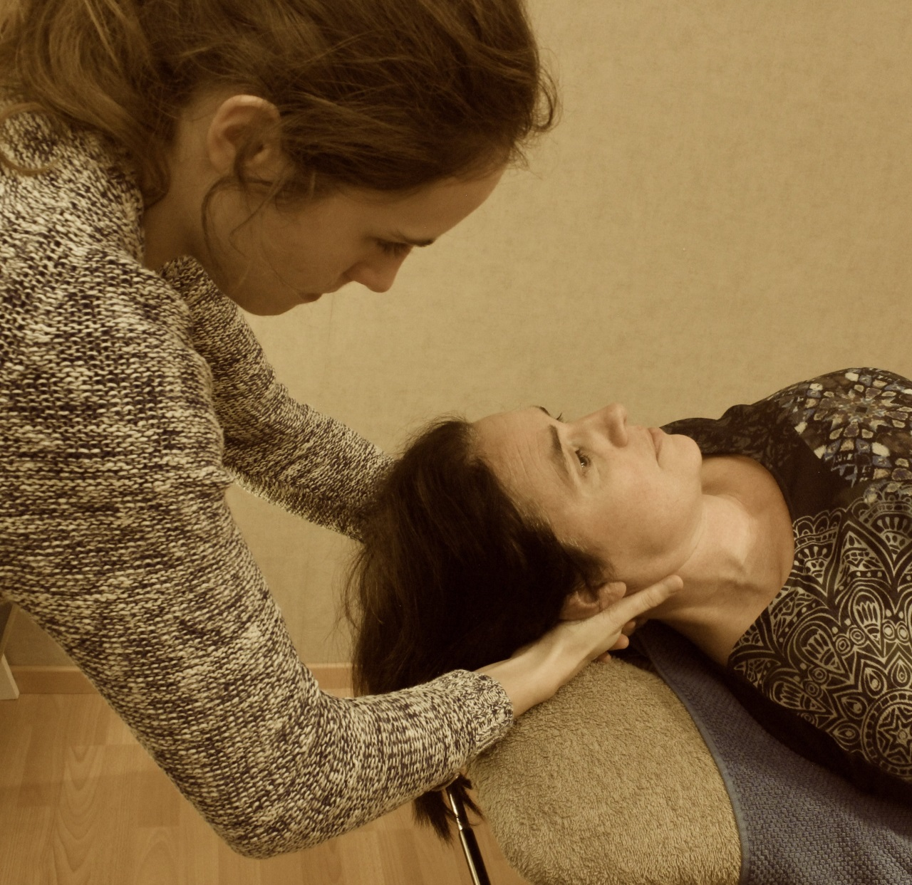

Manuele therapie
Specifieke behandeling om storingen in het functioneren van het bewegingsapparaat te herstellen. Voorbeelden daarvan zijn mobilisaties en manipulatiesom de gewrichtsbeweeglijkheid.

Specifieke behandeling om storingen in het functioneren van het bewegingsapparaat te herstellen. Voorbeelden daarvan zijn mobilisaties en manipulatiesom de gewrichtsbeweeglijkheid.
Specifieke behandeling van sportgerelateerde klachten zoals overbelastingsletsels of traumatische letsels. Door de oorzaak van de klachten te achterhalen gaan we ook preventief te werk.
Veel mensen hebben last van de rug, vaak door verkeerde houding in het dagelijks leven (veel computerwerk, gebogen zitten,...). Onze therapie in de rugschool richt zich op het aanleren van alternatieve houdingen en bewegingen die beter zijn voor de rug en op het versterken van bepaalde spiergroepen.
Specifieke revalidatie na een operatie (knie- of heupprothese, voorste kruisband letsel,...).
Specifieke revalidatie na handtrauma's (vb. peesletsels, diepe snijwonden,...).
Oefeningen op verschillende ondergronden om het evenwicht en de proprioceptie te verbeteren.
Behandeling van migraine en spanningshoofdpijn door middel van massage, manuele tractie, aroma therapie (munt) en oefeningen gericht op houdingscorrectie.
Specifieke revalidatie na aandoeningen van de hersenen of het zenuwstelsel zoals bijvoorbeeld een hersenbloeding (CVA), multiple sclerose(MS), ziekte van Parkinson, plexusletsels.
Behandelingen ter ondersteuning van de revalidatie of bij sportletsels.
Zachte massagevorm om het lymfestelsel te stimuleren en zo oedeem weg te werken.
Na een bevalling heeft u recht op 9 sessies. De eerste sessie wordt ingepland een maand voor de bevalling. De overige 8 sessies worden 4 tot 6 weken na de bevalling ingepland In die sessies worden de bekkenbodemspieren en de buikspieren teverstevigd en wordt de algemene conditie opgebouwd.
Specifieke kinesitherapie bij chronisch obstructief longlijden (COPD), mucoviscidose of andere longaandoeningen.
Behandeling gericht op het losmaken van een verkleefd litteken.